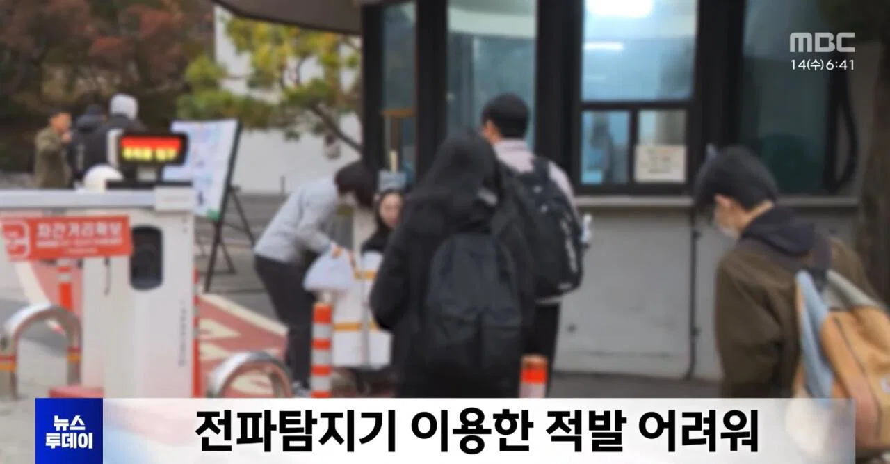
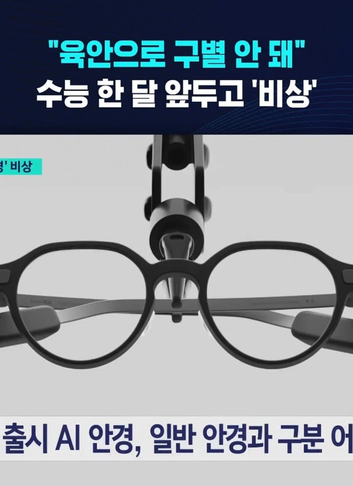

안경 쓴 수십만 수험생 검사하는 것도 문제인데
평범한 안경썼다가 시험시작하고 바꿔서 걸린 사람도 있음
한교시 시작때마다 모든 수험생 안경을 검사할 수도 없고
한다면 시간이 너무 지체되서 수능을 1박 2일로 봐야됨
시험장마다 전파차단하던가 emp터트리던가 해야됨


안경 쓴 수십만 수험생 검사하는 것도 문제인데
평범한 안경썼다가 시험시작하고 바꿔서 걸린 사람도 있음
한교시 시작때마다 모든 수험생 안경을 검사할 수도 없고
한다면 시간이 너무 지체되서 수능을 1박 2일로 봐야됨
시험장마다 전파차단하던가 emp터트리던가 해야됨
ㅇㅇ
안경 안에 SoC가 다 있어서 안경 혼자서 다 할 수 있는 기기(메타 레이밴 디스플레이)도 있고, 쟤네들은 근처에 있는 스마트폰이랑 연동해서 카메라로 촬영하면 데이터 저장이랑 처리, 연산은 스마트폰이 하고 화면 출력만 담당하는 거
그냥 교실마다 재밍기 하나씩 설치하면 안됨?
왜 비상
지금 한국에서 저런 용도로 쓸 수 있는 AR 안경 모델은 ROKID glasses AI, RayNeo X3 Pro 정도로 극히 제한되고, 겉으로 봤을 때 티가 안 난다고 하는데 정면에서 보면 렌즈 표면에 있는 회절격자, 카메라가 대놓고 보임. 그리고 안경 다리 ㅈㄴ 두껍다.
시험장 한 바퀴 돌면서 안경 쓴 애들 정면 보고 카메라 유무랑 회절격자 유무만 봐도 되는 건데 이건 좀...
갸우 물에 10분 담궈놓고 초음파 돌리면 기기ㅡ안망가질려나?
방수처리한다고 실리콘 접착제 ㅈㄴ 발라놓던데
아빠깐돌라스 루시스
그 MAGA들이 좋아하는 호일모자 씌우고 시험쳐야하는거 아니냐 ㅋㅋㅋ
대ai시대에 수능이고뭐고 이런 행동이 의미가 있나싶다
신분증 검사때 안경 벗겨서 한반 살펴보고 말면 될듯한데
그러면 저거랑 애널비즈같은거 연동시켜서 문제 틀리면 막 진동울리도록해서 다른 수험생들에게 직접적인 피해주면 큰 문제 아닌가?
어떻게든 저거를 다 하나하나 찾아내서 은밀하고 듬직한 감독관에게 아주 혼쭐나야하는데
감독관이 ai 안경을 찾아내는 ai안경을 쓰면됨
이러다 무선 인터넷 안되는 시험 전용학교를 만들어야 할지도
온디바이스면 인터넷 안되는것도 노상관 아님?
EMP ㅅㅂㅋㅋㅋㅋㅋㅋㅋㅋㅋㅋㅋㅋㅋㅋㅋㅋㅋㅋㅋㅋㅋㅋㅋ
1박2일은 근들갑아닌가
교실마다 재밍 설치해야하는 시대가 온거같음..
모든 창문을 알미늄판으로 막아야하나
전파차단은 쉽자나
wifi막는거 설치하면되지
그렇군... 뭔가 어릴때 상상하던 미래 모습이 진짜 현실이 되는것같아서 신기하네